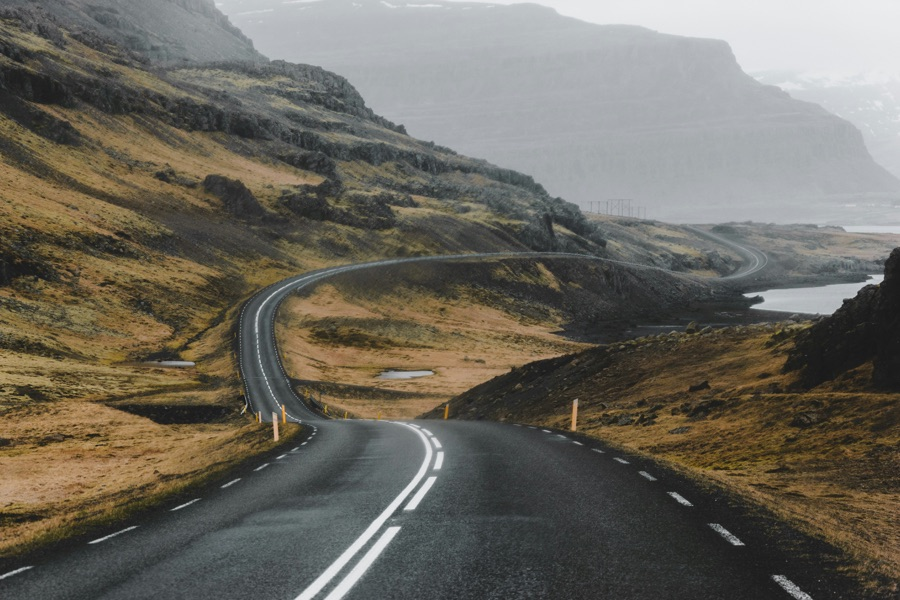
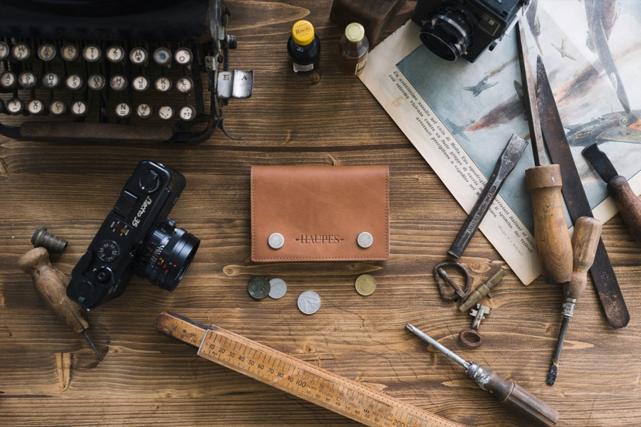

Das Studio hinter den Routen.
Angefangen hat es mit einer Tabelle.
Erst planten wir nur unsere eigenen Trips: Routen, Unterkünfte, Zeitpuffer, alles in einer Tabelle, die mit jeder Reise besser wurde. Dann wollten Freunde die Tabelle. Dann deren Freunde.

N 64.1466 / W 21.9426 · Island01Heute: ein kleines Studio in Berlin.
Drei Leute, zusammen über zehn Jahre unterwegs auf vier Kontinenten. Wir planen Reisen, die wir selbst machen würden, für Leute, die dafür keine drei Wochenenden Recherche übrig haben.
Dabei gilt eine Regel: Wir verkaufen nur Routen, die jemand aus dem Team selbst gefahren ist.
Alles andere wäre eine Liste aus dem Internet. Davon gibt es genug.

Berlin · seit 202302selbst gereist Seite 04
zugesagt Seite 05
Gletscherwanderung, Tauchen, Wüsten-Camp, Van Life. Nicht als Liste zum Angeben, sondern als Planungswissen: wir wissen, was diese Erlebnisse kosten, wie man sie bucht und wann sie sich lohnen.
Wo wir waren. Und wohin wir planen.
Dreht sich von selbst, drei Maschinen ziehen ihre Bahnen darüber. Ziehen oder Pfeiltasten zum Drehen, Zoomen mit Strg und Scrollrad, Pinch oder Plus und Minus. Jeder gefüllte Pin ist ein Ort, den wir selbst bereist haben.
N 64.1466 / W 21.9426 · Reykjavik · Start der ersten Team-Route
Ihr sollt unterwegs nicht auf die Karte schauen. Ihr sollt euch umschauen.
Aus dem Routenwerk-Logbuch
Drei Tage ohne Netz, der beste Blick der Albanischen Alpen. Hier entstand Guide Nr. 2.
POST